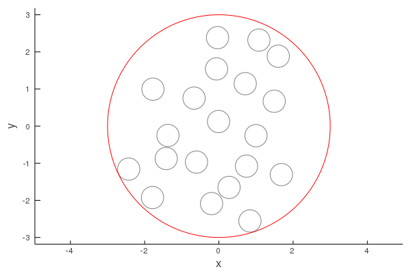
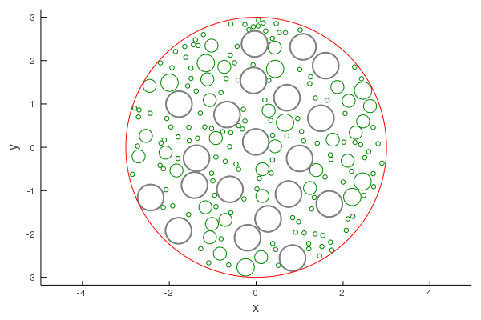
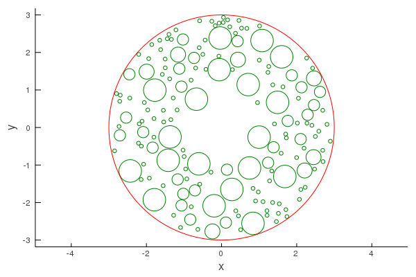
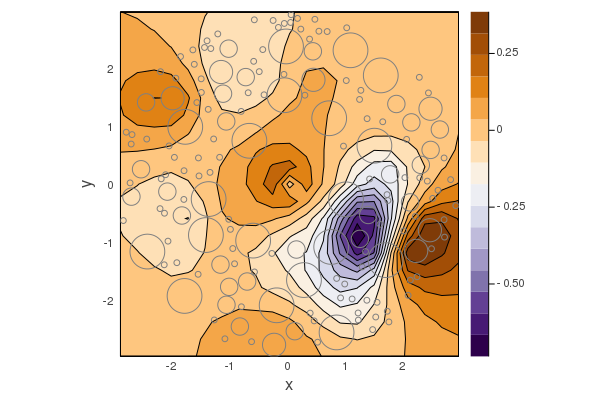

Particles
Particle is a struct which define a scatterer, obstacle, or simply particle, which can scatter waves. See Particle for a list of relevant types and functions.
A Particle have two fields: medium and shape. The medium defines what kind of waves can propagate inside Particle, and what type of RegularSource can be used to scatter waves from Particle. One example medium is Acoustic. The shape completely defines the geometry and position of the particle, see Shapes for details.
For an example we can define a circular particle with acoustics medium:
julia> using MultipleScattering;
julia> mymedium = Acoustic(2; ρ = 10.0, c = 2.0); # 2D acoustics with density ρ = 10.0 and soundspeed c = 2.0
julia> myshape = Sphere([-2.0, 2.0], 2.0);
julia> p1 = Particle(mymedium, myshape)
Particle(Acoustic(10.0, 2.0 + 0.0im, 2), Sphere{Float64, 2}([-2.0, 2.0], 2.0))
julia> outer_radius(p1), origin(p1)
(2.0, [-2.0, 2.0])If only a radius is given, the particle is a circle (or sphere in 3D) centred at the origin:
julia> Particle(mymedium, 0.5)
Particle(Acoustic(10.0, 2.0 + 0.0im, 2), Sphere{Float64, 2}([0.0, 0.0], 0.5))The medium of a particle can also describe a boundary condition. For example sound_hard (also called rigid) and sound_soft (also called pressure_release) define particles where the normal derivative of the pressure, or the pressure, is zero on the boundary.
Placing particles in a region
Suppose we want to place many circular particles in a region. The region has to be a pre-defined Shape, for example a Circle:
# Define the region
centre = [0.0, 0.0];
big_radius = 3.0;
circle = Sphere(centre, big_radius);
# Define the particle geometry and medium
p_radius = 0.3;
myshape = Circle(p_radius); # we do not specify centre as it is not used by random_particles
mymedium = Acoustic(2; ρ = 10.0, c = 2.0);
# Generate particles inside circle
volfrac = 0.2;
particles = random_particles(mymedium, myshape;
region_shape = circle,
volume_fraction = volfrac,
seed = 1
);
using Plots;
plot(particles)
plot!(circle, linecolor = :red)
Placing polydisperse particles in a region
Similar to the above, we can place particles with a range of shapes.
Suppose we want to add to the above example a range of smaller particles:
# Define a range of particles sizes
rs = [0.05, 0.15, 0.15, 0.2]; # by repeating the radius 0.15 twice, there will be twice as many particles with this radius.
myshapes = Circle.(rs);
mymedium = Acoustic(2; ρ = 0.2, c = 0.2);
# Generate particles inside circle
volfrac = 0.15
polydisperse_particles = random_particles(mymedium, myshapes;
current_particles = particles,
region_shape = circle,
volume_fraction = volfrac,
seed = 1
);
plot(polydisperse_particles, linecolor = :green)
plot!(particles, linewidth = 2.0)
plot!(circle, linecolor = :red)
Removing particles
Say we want to place a point-source within region filled with particles. To avoid placing the source inside any particle, we can remove a small region of particles:
small_circle = Circle(1.2);
filter!(p -> !(p ⊆ small_circle), polydisperse_particles)
plot(polydisperse_particles, linecolor = :green)
plot!(circle, linecolor = :red)
Next we place a point source in the centre and plot the result, while excluding a small region Circle(0.1) to avoid the singularity caused by a point source:
ω = 0.4;
point_wave = point_source(Acoustic(2; ρ = 1.0, c = 1.0), [0.0, 0.0]);
sim = FrequencySimulation(polydisperse_particles, point_wave);
plot(sim, ω;
resolution = 20,
exclude_region = Circle(0.1),
drawparticles = true
)
Particle internals
To define the scattering from a particle we use the T-matrix method, see What run calculates. This package provides the T-matrix for acoustic particles with the shapes:
- circles and spheres, which are exact and include penetrable, sound-hard, and sound-soft particles;
- a circle inside another circle, with the same origin, given by a
CapsuleParticle; - 2D Helmholtz resonators,
IsotropicHelmholtzandHelmholtz, which are sound-hard.
To understand how to define a new T-matrix read Notes on the T-matrix, see New particles, and see the source code of t_matrix.